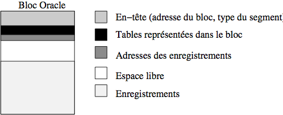
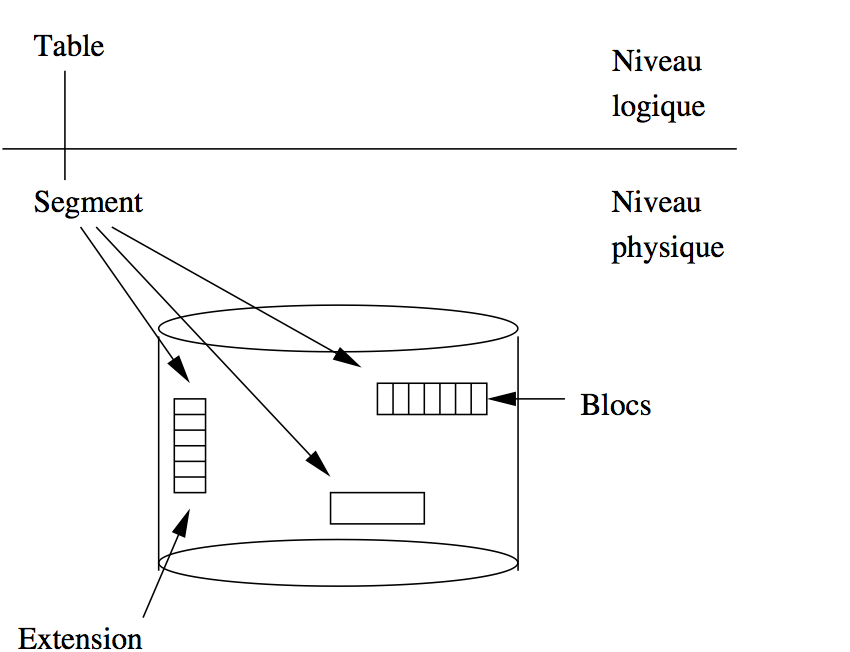

5. Moteurs de stockage¶
Ce chapitre propose un passage en revue de quelques-uns des principaux systèmes relationnels pour étudier la manière dont il gèrent le stockage des données et les paramètres qui permettent aux administrateurs de les ajuster. Cette étude est essentiellement destinée à montrer une mise en pratique concrète des principes généraux détaillés précédemment et ne prétend pas être une référence suffisante.
S1: Oracle¶
Supports complémentaires:
Le système de représentation physique d’Oracle est riche et illustre assez complètement les principes exposés dans les chapitres précédents. Un système Oracle (une instance dans la documentation) stocke les données dans un ou plusieurs fichiers. Ces fichiers sont entièrement attribués au SGBD, qui est seul à organiser leur contenu. Ils sont divisés en blocs dont la taille – paramétrable – peut varier de 1K à 8K. Au sein d’un fichier des blocs consécutifs peuvent être regroupés pour former des extensions ( »extent »). Enfin un ensemble d’extensions permettant de stocker un des objets physiques de la base (une table, un index) constitue un segment.
Il est possible de paramétrer, pour un ou plusieurs fichiers, le mode de stockage des données. Ce paramétrage comprend, entre autres, la taille des extensions, le nombre maximal d’extensions formant un segment, le pourcentage d’espace libre laissé dans les blocs, etc. Ces paramètres, et les fichiers auxquels ils s’appliquent, portent le nom de tablespace.
Nous revenons maintenant en détail sur ces concepts.
Fichiers et blocs¶
Au moment de la création d’une base de données, il faut attribuer à Oracle au moins un fichier sur un disque. Ce fichier constitue l’espace de stockage initial qui contiendra, au départ, le dictionnaire de données.
La taille de ce fichier est choisie par l’administrateur de bases de données (DBA), et dépend de l’organisation physique qui a été choisie. On peut allouer un seul gros fichier et y placer toutes les données et tous les index, ou bien restreindre ce fichier initial au stockage du dictionnaire et ajouter d’autres fichiers, un pour les index, un pour les données, etc. Le deuxième type de solution est sans doute préférable, bien qu’un peu plus complexe. Il permet notamment, en plaçant les fichiers sur plusieurs disques, de bien répartir la charge des contrôleurs de disque. Une pratique courante – et recommandée par Oracle – est de placer un fichier de données sur un disque et un fichier d’index sur un autre. La répartition sur plusieurs disques permet en outre, grâce au paramétrage des tablespaces qui sera étudié plus loin, de régler finement l’utilisation de l’espace en fonction de la nature des informations – données ou index – qui y sont stockées.
Les blocs ORACLE¶
Le bloc est la plus petite unité de stockage gérée par ORACLE. La taille d’un bloc peut être choisie au moment de l’initialisation d’une base, et correspond obligatoirement à un multiple de la taille des blocs du système d’exploitation. À titre d’exemple, un bloc dans un système comme Linux occupe 1024 octets, et un bloc ORACLE occupe typiquement 4 096 ou 8 092 octets.
{kind=link}

Fig. 5.1 Structure d’un bloc Oracle¶
La structure d’un bloc est identique quel que soit le type d’information qui y est stocké. Elle est constituée des cinq parties suivantes (Fig. 5.1):
l’entête (header) contient l’adresse du bloc, et son type (données, index, etc);
le répertoire des tables donne la liste des tables pour lesquelles des informations sont stockées dans le bloc;
le répertoire des enregistrements contient les adresses des enregistrements du bloc;
un espace libre est laissé pour faciliter l’insertion de nouveaux enregistrements, ou l’agrandissement des enregistrements du bloc (par exemple un attribut à
NULLauquel on donne une valeur par unupdate).enfin, l’espace des données contient les enregistrements.
Les trois premières parties constituent un espace de stockage qui n’est pas directement dédié aux données (Oracle le nomme l’overhead). Cet espace « perdu » occupe environ 100 octets. Le reste permet de stocker les données des enregistrements.
Les paramètres pctfree et pctused¶
La quantité d’espace libre laissée dans un bloc peut être spécifiée
grâce au paramètre pctfree, au moment de la création d’une
table ou d’un index. Par exemple une valeur de 30% indique que les
insertions se feront dans le bloc jusqu’à ce que 70% du bloc soit
occupé, les 30% restant étant réservés aux éventuels agrandissements
des enregistrements. Une fois que cet espace disponible de 70% est
rempli, Oracle considère qu’aucune nouvelle insertion ne peut se faire
dans ce bloc.
Notez qu’il peut arriver, pour reprendre l’exemple précédent, que des modifications
sur les enregistrements (mise à NULL de certains attributs par exemple)
fassent baisser le taux d’occupation du bloc. Quand ce taux baisse en dessous
d’une valeur donnée par le paramètre pctused , Oracle considère
que le bloc est à nouveau disponible pour des insertions.
En résumé, pctfree indique le taux d’utilisation maximal au-delà duquel
les insertions deviennent interdites, et pctused indique
le taux d’utilisation minimal en-deçà duquel ces insertions sont à nouveau
possibles. Les valeurs de ces paramètres dépendent des caractéristiques des données
stockées dans une table particulière.
Une petite valeur pour pctfree permet aux insertions de remplir
plus complètement le bloc, et peut donc mieux exploiter l’espace disque. Ce choix
peut être valable pour des données qui sont rarement modifiées. En contrepartie une valeur
plus importante de pctfree va occuper plus de blocs pour les mêmes
données, mais offre plus de flexibilité pour des mises à jour fréquentes.
Voici deux scénarios possibles pour spécifier pctused
et pctfree. Dans le premier, pctfree vaut 30%,
et pctused 40% (notez que la somme de ces deux valeurs
ne peut jamais excéder 100%). Les insertions dans un bloc peuvent
donc s’effectuer jusqu’à ce que 70% du bloc soit occupé. Le bloc
est alors retiré de la liste des blocs disponibles pour des insertions,
et seules des mises à jour (destructions ou modifications) peuvent
affecter son contenu. Si, à la suite de ces mises à jour, l’espace
occupé tombe en-dessous de 40%, le bloc est à nouveau marqué comme
étant disponible pour des insertions.
Dans ce premier scénario, on accepte d’avoir beaucoup d’expace innoccupé, au pire 60%. L’avantage est que le coût de maintenance de la liste des blocs disponibles pour l’insertion est limité pour Oracle.
Dans le second scénario, pctfree vaut 10% (ce qui est
d’ailleurs la
valeur par défaut), et pctused 80%. Quand le bloc est plein
à 90%, les insertions s’arrêtent, mais elles reprennent dès que
le taux d’occupation tombe sous 80%. On est assuré d’une bonne utilisation
de l’espace, mais le travail du SGBD est plus important (et donc
pénalisé) puisque la gestion des blocs disponibles/indisponibles
devient plus intensive. De plus, en ne laissant
que 10% de marge de manœuvre pour d’éventuelles extensions
des enregistrements, on s’expose éventuellement
à la nécessité de chaîner les
enregistrements sur plusieurs blocs.
Enregistrements¶
Un enregistrement est une suite de données stockés, à quelques variantes près,
comme décrit dans le chapitre Dispositifs de stockage. Par exemple
les données de type CHAR(n) sont stockées dans un tableau
d’octets de longueur n+1. Le premier octet indique
la taille de la chaîne, qui doit donc être comprise entre 1 et 255.
Les n octets suivants stockent les caractères de la chaînes, complétés
par des blancs si la longueur de cette dernière est inférieure
à la taille maximale. Pour les données
de type VARCHAR(n) en revanche, seuls
les octets utiles pour la représentation de la chaîne sont
stockés. C’est un cas où une mise à jour élargissant la chaîne
entraîne une réorganisation du bloc.
Chaque attribut est précédé de la longueur de
stockage. Dans Oracle les valeurs NULL sont
simplement représentées par une longueur de 0.
Cependant, si les n derniers attributs d’un enregistrement
sont NULL, Oracle se contente de placer une marque
de fin d’enregistrement, ce qui permet d’économiser
de l’espace.
Chaque enregistrement est identifié par un ROWID,
comprenant plusieurs parties, dont, notamment:
le numéro du bloc au sein du fichier;
le numéro de l’enregistrement au sein du bloc;
enfin l’identifiant du fichier.
Un enregistrement peut occuper plus d’un bloc, notamment s’il contient
les attributs de type LONG. Dans ce cas Oracle utilise un
chaînage vers un autre bloc. Un situation comparable est celle
de l’agrandissement d’un enregistrement qui va au-delà de l’espace
libre disponible. Dans ce cas Oracle effectue une migration:
l’enregistrement est déplacé en totalité dans un autre bloc, et un
pointeur est laissé dans le bloc d’origine pour ne pas avoir à
modifier l’adresse de l’enregistrement (ROWID). Cette adresse
peut en effet être utilisée par des index, et une réorganisation totale
serait trop coûteuse. Migration et chaînage sont bien entendu
pénalisants pour les performances.
Extensions et segments¶
Un segment est un ensemble de fragments de stockage (les « extensions, voir ci-dessous) pour un des types de données persistantes géré par Oracle. Il existe de nombreux types de segments, voici les principaux:
les segments de données contiennent les enregistrements des tables, avec un segment de ce type par table;
les segments d’index contiennent les enregistrements des index; il y a un segment par index;
les segments temporaires sont utilisés pour stocker des données pendant l’exécution des requêtes (par exemple pour les tris);
les segments rollbacks contiennent les informations permettant d’effectuer une reprise sur panne ou l’annulation d’une transaction; il s’agit typiquement des données avant modification, dans une transaction qui n’a pas encore été validée.
Une extension est un suite contiguë (au sens de l’emplacement sur le disque) de blocs. En général une extension est affectée à un seul type de données (par exemple les enregistrements d’une table). Comme nous l’avons vu en détail, cette contiguïté est un facteur essentiel pour l’efficacité de l’accès aux données, puisqu’elle évite les déplacements des têtes de lecture, ainsi que le délai de rotation.
Le nombre de blocs dans une extension peut être spécifié par l’administrateur. Bien entendu des extensions de taille importante favorisent de bonnes performances, mais il existe des contreparties:
si une table ne contient que quelques enregistrements, il est inutile de lui allouer une extension contenant des milliers de blocs;
l’utilisation et la réorganisation de l’espace de stockage peuvent être plus difficiles pour des extensions de grande taille.
Les extensions sont l’unité de stockage constituant les segments. Si on a par exemple indiqué que la taille des extensions est de 50 blocs, un segment (de données ou d’index) consistera en n extensions de 50 blocs chacune.
Une extension initiale est allouée à la création d’un segment. De nouvelles extensions sont allouées dynamiquement (autrement dit, sans intervention de l’administrateur) au segment au fur et à mesure des insertions: rien ne peut garantir qu’une nouvelle extension est contiguë avec les précédentes. En revanche une fois qu’une extension est affectée à un segment, il faut une commande explicite de l’administrateur, ou une destruction de la table ou de l’index, pour que cette extension redevienne libre.
Quand Oracle doit créer une nouvelle extension et se trouve dans l’incapacité de constituer un espace libre suffisant, une erreur survient. C’est alors à l’administrateur d’affecter un nouveau fichier à la base, ou de réorganiser l’espace dans les fichiers existant.
Les tablespaces¶
Un tablespace est un espace physique constitué de un (au moins) ou
plusieurs fichiers. Une base de données Oracle
est donc organisée sous la forme d’un ensemble de tablespace, sachant
qu’il en existe toujours un, créé au moment de l’initialisation de la base,
et nommé SYSTEM. Ce tablespace contient le dictionnaire
de données, y compris les procédures stockées, les triggers, etc.
{kind=link}

Fig. 5.2 Organisation des tablespaces Oracle¶
L’organisation du stockage au sein d’un tablespace est décrite par de nombreux paramètres (taille des extensions, nombre maximal d’extensions, etc.) qui sont donnés à la création du tablespace, et peuvent être modifiés par la suite. C’est donc au niveau du tablespace (et pas au niveau du fichier) que l’administrateur de la base peut décrire le mode de stockage des données. La création de plusieurs tablespaces, avec des paramètres de stockage individualisés, offre de nombreuses possibilités:
adaptation du mode de stockage en fonction d’un type de données particulier;
affectation d’un espace disque limité aux utilisateurs;
contrôle sur la disponibilité de parties de la base, par mise hors service d’un ou plusieurs tablespaces;
enfin – et surtout – répartition des données sur plusieurs disques afin d’améliorer les performances.
Un exemple typique est la séparation des données et des index, si possible sur des disques différents, afin d’optimiser la charge des contrôleurs de disque. Il est également possible de créer des tablespaces dédiées aux données temporaires ce qui évite de mélanger les enregistrements des tables et ceux temporairement créés au cours d’une opération de tri. Enfin un tablespace peut être placé en mode de lecture, les écritures étant interdites. Toutes ces possibilités donnent beaucoup de flexibilité pour la gestion des données, aussi bien dans un but d’améliorer les performances que pour la sécurité des accès.
Au moment de la création d’un tablespace, on indique les paramètres de stockage par défaut des tables ou index qui seront stockés dans ce tablespace. L’expression « par défaut » signifie qu’il est possible, lors de la création d’une table particulière, de donner des paramètres spécifiques à cette table, mais que les paramètres du tablespace s’appliquent si on ne le fait pas. Les principaux paramètres de stockage sont:
la taille de l’extension initiale (par défaut 5 blocs);
la taille de chaque nouvelle extension (par défaut 5 blocs également);
le nombre maximal d’extensions, ce qui donne donc, avec la taille des extensions, le nombre maximal de blocs alloués à une table ou index;
la taille des extensions peut croître progressivement, selon un ratio indiqué par
pctincrease; une valeur de 50% pour ce paramètre indique par exemple que chaque nouvelle extension a une taille supérieure de 50% à la précédente.
Voici un exemple de création de tablespace.
CREATE TABLESPACE TB1
DATAFILE 'fichierTB1.dat' SIZE 50M
DEFAULT STORAGE (
INITIAL 100K
NEXT 40K
MAXEXTENTS 20,
PCTINCREASE 20);
La commande crée un tablespace, nommé TB1, et lui affecte un premier
fichier de 50 mégaoctets. Les paramètres de la partie DEFAULT STORAGE
indiquent, dans l’ordre:
la taille de la première extension allouée à une table (ou un index);
la taille de la prochaine extension, si l’espace alloué à la table doit être agrandi;
le nombre maximal d’extensions, ici 20;
enfin chaque nouvelle extension est 20% plus grande que la précédente.
En supposant que la taille d’un bloc est 4K, on obtient une première extension de 25 blocs, une seconde de 10 blocs, une troisième de \(10 \times 1,2 = 12\) blocs, etc.
Le fait d’indiquer une taille maximale permet de contrôler que l’espace ne sera pas utilisé sans limite, et sans contrôle de l’administrateur. En contrepartie, ce dernier doit être prêt à prendre des mesures pour répondre aux demandes des utilisateurs quand des messages sont produits par Oracle indiquant qu’une table a atteint sa taille limite.
Voici un exemple de tablespace défini avec un paramétrage plus souple:
d’une part il n’y a pas de limite au nombre d’extensions d’une table, d’autre part
le fichier est en mode auto-extension, ce qui signifie qu’il
s’étend automatiquement, par tranches de 5 mégaoctets, au fur et à mesure
que les besoins en espace augmentent. La taille du fichier est elle-même
limitée à 500 mégaoctets.
CREATE TABLESPACE TB2
DATAFILE 'fichierTB2.dat' SIZE 2M
AUTOEXTEND ON NEXT 5M MAXSIZE 500M
DEFAULT STORAGE (INITIAL 128K NEXT 128K MAXEXTENTS UNLIMITED);
Il est possible, après la création d’un tablespace, de modifier
ses paramètres, étant entendu que la modification ne s’applique
pas aux tables existantes mais à celles qui vont être créées.
Par exemple on peut modifier le tablespace TB1 pour
que les extensions soient de 100K, et le nombre maximal d’extensions porté
à 200.
ALTER TABLESPACE TB1
DEFAULT STORAGE (
NEXT 100K
MAXEXTENTS 200);
Voici quelques-unes des différentes actions disponibles sur un tablespace,:
On peut mettre un tablespace hors-service, soit pour effectuer une sauvegarde d’une partie de la base, soit pour rendre cette partie de la base indisponible.
ALTER TABLESPACE TB1 OFFLINE;Cette commande permet en quelque sorte de traiter un tablespace comme une sous-base de données.
On peut mettre un tablespace en lecture seule.
ALTER TABLESPACE TB1 READ ONLY;
Enfin on peut ajouter un nouveau fichier à un tablespace afin d’augmenter sa capacité de stockage.
ALTER TABLESPACE ADD DATAFILE 'fichierTB1-2.dat' SIZE 300 M;
Au moment de la création d’une base, on doit donner la taille et l’emplacement d’un
premier fichier qui sera affecté au tablespace SYSTEM. À chaque
création d’un nouveau tablespace par la suite, il faudra créer un fichier qui
servira d’espace de stockage initial pour les données qui doivent y
être stockées. Il faut bien noter qu’un fichier n’appartient qu’à un seul
tablespace, et que, dès le moment où ce fichier est créé, son contenu
est exlusivement géré par Oracle, même si une partie seulement est utilisée.
En d’autres termes il ne faut pas affecter un fichier de 1 Go à un
tablespace destiné seulement à contenir 100 Mo de données, car les 900 Mo
restant ne servent alors à rien.
Oracle utilise l’espace disponible dans un fichier pour y créer de nouvelles extensions quand la taille des données augmente, ou de nouveaux segments quand des tables ou index sont créés. Quand un fichier est plein – ou, pour dire les choses plus précisément, quand Oracle ne trouve pas assez d’espace disponible pour créer un nouveau segment ou une nouvelle extension –, un message d’erreur avertit l’administrateur qui dispose alors de plusieurs solutions,:
créer un nouveau fichier, et l’affecter au tablespace (voir la commande ci-dessus);
modifier la taille d’un fichier existant;
enfin, permettre à un ou plusieurs fichiers de croître dynamiquement en fonction des besoins, ce qui peut simplifier la gestion de l’espace.
Création des tables¶
Tout utilisateur Oracle ayant les droits suffisants peut
créer des tables. Notons que sous Oracle la notion
d’utilisateur et celle de base de données sont liées,:
un utilisateur (avec des droits appropriés) dispose d’un
espace permettant de stocker des tables, et tout
ordre CREATE TABLE effectué par cet utilisateur
crée une table et des index qui appartiennent
à cet utilisateur.
Il est possible, au moment où on spécifie le profil d’un utilisateur, d’indiquer dans quels tablespaces il a le droit de placer des tables, de quel espace total il dispose sur chacun de ces tablespaces, et quel est le tablespace par défaut pour cet utilisateur.
Il devient alors possible d’inclure dans la commande
CREATE TABLE des paramètres de stockage. Voici
un exemple,:
CREATE TABLE Film (...)
PCTFREE 10
PCTUSED 40
TABLESPACE TB1
STORAGE ( INITIAL 50K
NEXT 50K
MAXEXTENTS 10
PCTINCREASE 25 );
On indique donc que la table doit être stockée
dans le tablespace TB1, et on remplace les
paramètres de stockage de ce tablespace par des paramètres
spécifiques à la table Film.
Par défaut une table est organisée séquentiellement sur
une ou plusieurs extensions. Les index sur la table sont
stockés dans un autre segment, et font référence aux
enregistrements grâce au ROWID.
S2: MySQL¶
Supports complémentaires:
Une importante spécificité de MySQL par rapport à d’autres SGBD est de proposer des moteurs de stockage différents et même de permettre leur cohabitation dans une même base de données. Il s’agit d’une souplesse assez exceptionnelle, car les moteurs de stockage ont des comportements spécifiques quant à la manière de conserver les données des tables et index, et sont donc plus ou moins adaptés selon les contextes d’utilisation.
Les deux moteurs étudiés ici sont MyISAM et InnoDB. Le premier est efficace et compact, mais ne gère pas les transactions, au contraire du second.
On peut choisir le moteur de stockage au moment de la création d’une table. La syntaxe est la suivante.
create table <nomTable> (...) engine <nomMoteur>
Nous avons choisi de ne pas parler des autres moteurs de stockage dont voici une brève description.
memory(ouHEAP) qui permet de gérer des tables en mémoire principale et peut ponctuellement être utile pour stocker efficacement des tables temporaires.
Archivequi compresse les données et permet de diminuer les coûts de stockage pour des volumes importants. En revanche, il n’accepte que les instructionsselectetinsert. Il es utile surtout pour l’archivage.
Ndbest un moteur de stockage dédié aux systèmes distribués (répartition dans une grappe de serveurs.enfin, `Maria` est le moteur de stockage de la version Open source nommée MariaDB depuis l’acquisition de MySQL par Oracle en 2010.
MySQL s’appuie sur les fichiers du système d’exploitation, soit complètement dans le cas de MyISAM qui associe une base à un répertoire et crée dans ce répertoire des fichiers pour chaque table, soit partiellement pour InnoDB qui stocke plusieurs tables dans un même fichier.
Chaque ligne d’une table relationnelle est stockée dans un enregistrement physique dans un fichier. Nous ne rentrerons pas dans le détail de la structure d’un enregistrement qui varie selon les moteurs de stockage. Un enregistrement contient des données dites de contrôle (date de création, de modification, liens vers d’autres versions, taille de l’enregistrement) qui servent au système en plus des valeurs des attributs.
MyISAM¶
MyISAM est le premier moteur de stockage de MySQL. Par défaut (autrement dit en l’absence de spécification d’un moteur) c’est lui qui stocke les tables. Le moteur MyISAM nécessite peu de volume: les données y sont stockées en tas, sans utiliser de blocs.
Le stockage en tas est très simple et non organisé: chaque nouvel enregistrement est placé soit dans le premier emplacement libre plus grand que lui, soit à la suite du dernier enregistrement. Quand un enregistrement est détruit, il libère une place qui peut être réutilisée ensuite à l’occasion de l’insertion d’un enregistrement de taille inférieure ou égale.
MyISAM n’utilise pas de cache pour les données et ne propose aucun mécanisme transactionnel. Une lecture (d’un enregistrement de données) est toujours physique (accès au disque) et une écriture est toujours faite immédiatement et remplace l’ancienne version de l’enregistrement. La modification est immédiatement visible des autres utilisateurs.
Pour chaque table MyISAM, trois fichiers sont créés par défaut dans le répertoire de la base de données:
<nomTable>.frm: la description de la tablenomtable;
<nomTable>.MYD: les données de la tablenomtable;
<nomTable>.MYI: les index de la tablenomtable, dont un index unique pour la clé primaire;
Puisque MyISAM n’utilise pas de cache pour les données des tables, celles-ci restent toujours cohérentes sur le disque, même si le serveur s’arrête de manière inopinée. Le moteur MyISAM n’a donc pas besoin d’un journal des transactions (tout se tient), même s’il existe un journal de sauvegarde destiné aux reprises à chaud. Les seules incohérences qui peuvent apparaître seront dans les index, qui peuvent être réparés par reconstruction à partir des données.
En revanche, les index sont conservés dans un cache. Toute la stratégie d’évaluation des requêtes s’appuie sur l’hypothèse que les index seront utilisés. La présence des index en cache (partiellement ou totalement) est alors une garantie de très grande efficacité.
On peut modifier l’emplacement des fichiers
au niveau de chaque table en positionnant
deux
paramètres lors de l’instruction create table. Ces paramètres
permettent de répartir les entrées / sorties:
DATA DIRECTORY: emplacement du fichier de données;
INDEX DIRECTORY,: emplacement du fichier des index.
Voici un exemple de répartition des données et des index.
CREATE TABLE Client
(id_client INT AUTO_INCREMENT NOT NULL,
prénom VARCHAR(50) NOT NULL,
nom VARCHAR(50) NOT NULL,
adresse VARCHAR(255) NOT NULL,
ville VARCHAR(60) NOT NULL,
code_postal VARCHAR(10) NOT NULL,
PRIMARY KEY (id_client)
) DATA DIRECTORY = '/disk1/Credit'
INDEX DIRECTORY = '/disk2/index/Credit';
Quand on est sûr de disposer de deux disques physiques (attention, pas des volumes logiques), il est important, pour de gros volumes, de placer les index et les données sur des disques différents. Puisque le serveur accède à ces fichiers indépendamment, les accès s’en trouveront parallélisés. Si on ne maîtrise pas complètement la répartition physique des disques, un stockage par défaut fera l’affaire, éventuellement sur des périphériques RAID.
InnoDB¶
InnoDB est le moteur par défaut depuis la version 5.5. C’est un moteur de stockage qui apporte essentiellement deux fonctionnalités par rapport à MyISAM:
un support complet pour les transactions;
la prise en compte des contraintes d’intégrité référentielle.
InnoDB utilise une technique très différente de MyISAM. Les données sont organisées par blocs, et InnoDB utilise un cache pour conserver en mémoire les plus utilisés. InnoDB est surtout un moteur transactionnel qui propose tous les mécanismes de validation, annulation et cohérence décrits par la norme SQL99 (voir chap-introconc). Le modèle de stockage et de transactionindex{transaction}s est assez nettement inspiré de celui d’ORACLE.
InnoDB propose deux options pour l’affectation des données aux fichiers de la base :
un seul ensemble de fichiers, donné par le paramètre
innodb_data_file_path. Toutes les tables et index seront répartis dans ces fichiers;un fichier par table.
Dans tous les cas, un fichier table}.frm sera créé dans
le sous-répertoire
de la base. Comme pour MyISAM, il contient la description de la table.
Les paramètres de stockage sont donnés à la création du fichier,
et spécifiés dans le fichier de configuration. Il s’agit:
de l’emplacement des fichiers de la base
de leur taille
et éventuellement d’une option d’extension automatique.
Par exemple on indiquera un fichier mydata.ibd de taille initiale de 100
Mo et qui peut s’étendre automatiquement jusqu’à 1 Go avec
la spécification suivante, dans le fichier
my.cnf:
innodb_data_file_path=mydata.ibd:100M:autoextend:1G
Quand on veut ajouter un fichier il suffit de le spécifier dans
le fichier de configuration (seul le dernier fichier peut
avoir l’option autoextend).
innodb_data_file_path=mydata.ibd:100M;mydata2.idb:100M:autoextend:1G
Si on choisit d’activer le paramètre innodb_file_per_table, la table
et ses index sont stockés dans un fichier du sous-repertoire de la base. Le
fichier est auto-extensible et porte le nom table.ibd}.
InnoDB organise les tables d’après l’index
principal sur la clé primaire.
Il s’agit d’une structure non-dense, donc plaçante:
l’emplacement des enregistrements n’est pas libre, mais
se détermine d’après la structure de l’index associé.
Entre autres caractéristiques, le stockage
est ordonné selon la clé primaire, ce qui peut
considérablement améliorer la clause order by
ou certains algorihmes de jointures
car aucune indirection n’est
nécessaire pour accéder aux données de la table.
Ce mode de stockage est un peu plus compliqué à gérer.
Les insertions sont un peu plus lentes en moyenne
que dans un stockage en tas. C’est un bon compromis
si la base est
plus lue qu’approvisionée en données nouvelles. Il
est d’ailleurs proposé (au moins à titre d’option) dans la plupart
des SGBD (dans Oracle par exemple il correspond
aux index-organized tables).
Il est fortement déconseillé de modifier la clé primaire d’une ligne dans InnoDB car cela implique une réorganisation importante de la structure, y compris des index secondaires.
Le cache de données InnoDB utilise un mécanisme de liste LRU (Least Recently Used) pour gérer la montée et le recyclage des blocs en mémoire. Quand une donnée nécessaire est dans un bloc qui se trouve dans le cache, celle-ci est remise en tête de la liste. Si le bloc n’est pas dans la liste, il est lu sur le disque et monté en tête de la liste; le bloc en fin de liste est alors supprimé.
Puisque InnoDB utilise un mécanisme de cache pour les données, ces dernières sont d’abord modifiées dans le cache, et se retrouvent alors incohérentes avec la version stockée sur disque. On pourrait penser à écrire immédiatement pour mettre les deux versions en concordance, mais cela entraînerait des entrées/sorties aléatoires très coûteuses. La stratégie « paresseuse » consiste donc à attendre que le bloc contenant la donnée arrive en bout de liste LRU et soit finalement écrit sur le disque. Dans l’intervalle entre la mise à jour et l’écriture, le disque est une image incohérente des données modifiées en cache.
Un mécanisme est donc nécessaire pour reconstruire cette cohérence en cas d’arrêt brutal du serveur prog{mysqld}. InnoDB conserve toutes les modifications des enregistrements dans un journal des transactions. Le chapitre Reprise sur panne détaille les mécanismes de reprise sur panne basés sur le journal des transactions.
Quel moteur choisir?
Le moteur de stockage doit être choisi en fonction du type d’accès à la base de données, des besoins en performances et des exigences transactionnelles.
Pour les bases de données essentiellement consultées et chargées périodiquement par des traitements batches ou des transactions très simples voire atomiques, on choisira le moteur MyISAM. Il a un modèle de stockage simple et utilise peu d’espace disque, ce qui le rend performant. Les bases de ce type seront par exemple des catalogues, des annuaires ou des bases décisionnelles.
Pour les bases avec de fortes exigences transactionnelles, c’est-à-dire dont les traitements métiers comportent de nombreuses instructions de mise à jour avec une exigence forte de cohérence, on choisira le moteur InnoDB qui offre la gestion des transactions. Par exemple, les bases financières ou de gestion de stock nécessitent une cohérence qui justifie l’emploi de InnoDB.
Par ailleurs, si des requêtes effectuent de nombreuses jointures sur des tables de volume important, on pourra choisir le moteur InnoDB. En effet, le stockage en cluster sur la clé primaire et l’utilisation d’un cache de données permettent d’accélerer les jointures qui concernent beaucoup de lignes. Les traitements de reporting ou d’édition massives peuvent en bénéficier.
Pour toutes les tables qui stockent des données temporairement lors d’un
traitement, on peut envisager le moteur memory. C’est souvent le cas pour
les chargements et transformations des
bases de données décisionnelles.
Pour les données qui ne seront plus modifiées, on pourra utiliser le moteur
archive qui compresse les données. Il est
conseillé d’écrire un traitement serveur spécifique pour archiver massivement
les données qui doivent l’être. Par exemple, on pourra archiver chaque premier
du mois les données du mois précédent.
Il est conseillé de stocker les données sur des systèmes de fichiers dédiés. Cela permet de mieux gérer l’espace disque. Pour cela on utilisera des liens symboliques. La répartition sur des disques distincts des données et des index (possible pour MyISAM, pas pour InnoDB), est tout à fait recommandée. Elle est indispensable dans le cas des fichiers journaux et des fichiers de données.
S3: SQL Server¶
Pas de support écrit, mais présentation vidéo par Nicolas Travers
S4: Postgres¶
Pas de support écrit, mais présentation vidéo par Nicolas Travers

Ce cours de Philippe Rigaux est mis à disposition selon les termes de la licence Creative Commons Attribution - Pas d’Utilisation Commerciale - Partage dans les Mêmes Conditions 4.0 International.
Table Of Contents
- 1. Introduction
- 2. Dispositifs de stockage
- 3. Structures d’index: l’arbre B
- 4. Structures d’index: le hachage
- 5. Moteurs de stockage
- 6. Opérateurs et algorithmes
- 7. Evaluation et optimisation
- 8. Travaux pratiques: optimisation
- 9. Transactions
- 10. Contrôle de concurrence
- 11. Reprise sur panne
- 12. Annales des examens
Recherche
Saisissez un ou plusieurs mots-clés.
Comment inspecter les tablespaces¶
Oracle fournit un certain nombre de vues dans son dictionnaire de données pour consulter l’organisation physique d’une base, et l’utilisation de l’espace.
Ces vues sont gérées sous le compte utilisateur
SYSqui est réservé à l’administrateur de la base. Voici quelques exemples de requêtes permettant d’inspecter une base. On suppose que la base contient deux tablespace,SYSTEMavec un fichier de 50M, etTB1avec deux fichiers dont les tailles repectives sont 100M et 200M.La première requête affiche les principales informations sur les tablespaces.
On obtient quelque chose qui ressemble à:
On peut obtenir la liste des fichiers d’une base, avec le tablespace auquel ils sont affectés:
Avec un résultat:
Enfin on peut obtenir l’espace disponible dans chaque tablespace. Voici par exemple la requête qui donne des informations statistiques sur les espaces libres du tablespace
SYSTEM.Résultat:
SUMdonne le nombre total de blocs libres,PIECESmontre la fragmentation de l’espace libre, etMAXIMUMdonne l’espace contigu maximal. Ces informations sont utiles pour savoir s’il est possible de créer des tables volumineuses pour lesquelles on souhaite réserver dès le départ une extension de taille suffisante.